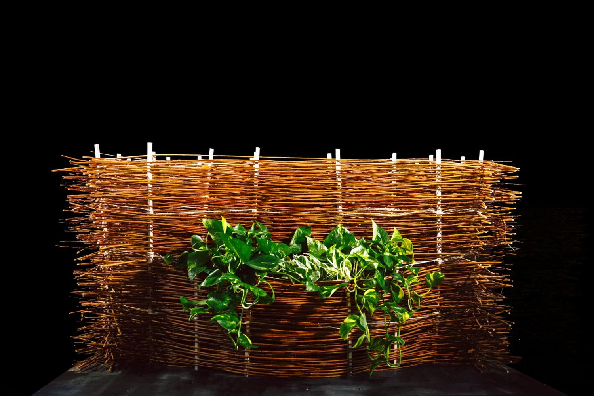
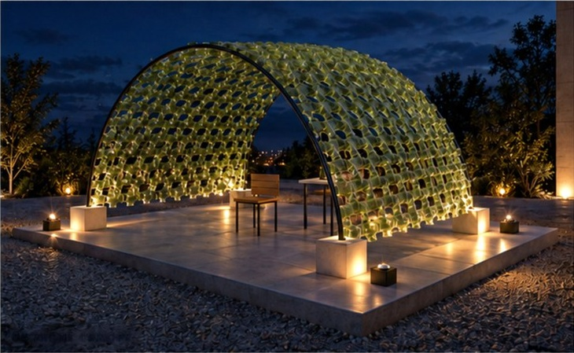

MATTER
IN MOTION.
WILLOW + EARTH + ROBOTICS
IAAC MRAC / TEAM PROTOTYPE
I turn geometry into physical experiments.
Architecture, robotic fabrication
and the materials in between.
THE WORKSELECTED WORK
2019 / 2026
Ideas, made
physical.
ABB and UR robot workflows, 3D scanning
and computer vision. Team prototypes
with every role credited.
Keep exploring.
All 17 entries. Robotic fabrication,
sensing and the materials in between.
No matching projects. Try a different material, tool or title.
A living façade,
designed for
care.
SCULPTA: parametric PETG components for a maintainable microalgal façade. From printable geometry to replaceable connections and architectural assemblies.
PRINTED PROTOTYPES / CULTIVATION + THERMAL PERFORMANCE NOT YET VALIDATED
CONCEPT VISUALISATION · NOT BUILTArchitect
by training.
Maker by
curiosity.
I'm Chi, an architectural designer and researcher based in Barcelona. I work where computational geometry meets physical material.
My projects span robotic fabrication with ABB and UR arms, LiDAR point clouds, computer vision and PETG prototyping. I’m interested in building envelopes that can be fabricated, maintained and repaired, not just visualised.
Alongside design and research, I bring international partnership and business-development experience. My next step is to connect that understanding of people and use cases with more reproducible technical work.
ETSAV · Universitat Politècnica de Catalunya
Institute for Advanced Architecture of Catalonia
Feng Chia University
Python, ROS/MoveIt and introductory machine learning began as coursework. Team projects are credited within each entry.
Download CV · fabrication & prototypingA 3D-based diagnostic workflow for conservation decision-making of traditional timber architecture
Built Heritage · accepted for publication, 2026MAKE.